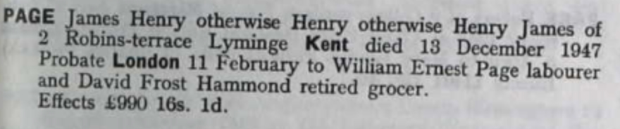
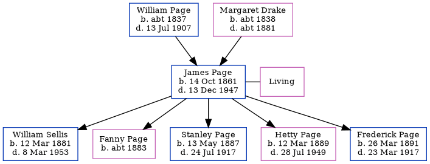

James Henry Page 1861 - 1947
[ Home ] | [ Calendar ] | [ Surnames Index ] | [ Errors ] | [ Family History ]The child of William Page (a bricklayer) and Margaret Drake, James Page, (also known as Henry Page) the second cousin twice-removed on the father's side of Nigel Horne, was born in Folkestone, Kent, England on 14 Oct 18611,2,3, was baptised there at Parish Church of St Mary & St Eanswythe, Church St on 22 Dec 1861 and also married Elizabeth Sellis (with whom he had 5 children: William Ernest, Fanny, Stanley Wallace, Hetty Camelia and Frederick Henry) there at Parish Church of St Mary & St Eanswythe, Church St on 16 Apr 18825.
During his life, he was living at Sandfield House in Folkestone on 2 Apr 18711; and at 2 Robins Terrace, Lyminge, Kent, England in 1947.
He died on 13 Dec 1947 in Folkestone2,4 and was buried at Ss Mary & Ethelburga in Lyminge on 17 Dec 1947 (a drizzly day)6.
Parents
- William Richard was born c. 1837
- Margaret was born c. 1838
Children
- William Ernest was born on 12 Mar 1881
- Fanny was born c. 1883
- Stanley Wallace was born on 13 May 1887
- Hetty Camelia was born on 12 Mar 1889
- Frederick Henry was born on 26 Mar 1891
Citations
- 1871 England, Wales & Scotland Census - Findmypast (was age 9 and the son of the head of the household)
- England & Wales deaths 1837-2007 - Findmypast
- Kent Marriages And Banns - Findmypast
- England & Wales Government Probate Death Index 1858-2019 - Findmypast
- Kent Marriages And Banns - Findmypast
- Kent Burials - Findmypast
Media
Probate Notice

Kent, Canterbury Archdeaconry marriages 1538-1928 - GBPRS/CANT/M/97002980/1
England Marriages 1538-1973 - R_848371162
England & Wales marriages 1837-2005 - BMD/M/1882/2/AZ/000220/153
England & Wales deaths 1837-2007 - BMD/D/1947/4/AZ/000726/136
Kent Burials - GBPRS/CANT/D/95384987
Kent Baptisms - GBPRS/CANT/B/96151153
England Births & Baptisms 1538-1975 - R_884242279
Family Tree
Map
Generated by ged2site. Last updated on Jul 3, 2024
Known Issues
Residence record for 1947 contains no citation
Listed in the residence for 1947, but spouse Elizabeth Sellis is not
1939 UK register information missing